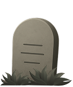
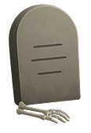

Discover what others have laid to rest.
Browse through a growing graveyard of unfinished side projects, half-written code, and dreams paused mid-keystroke.
Tired of pretending you'll finish it someday?
Give your project the send-off it deserves.
BURY
Browse through a growing graveyard of unfinished side projects, half-written code, and dreams paused mid-keystroke.
Pay tribute to the concepts that had potential — just not enough time, energy, or coffee to survive.

Each tombstone tells a story — from crash loops to burned-out devs. Take a moment of silence... or laughter.
These projects did not make it to launch, but they might spark your next big (and hopefully finished) idea.